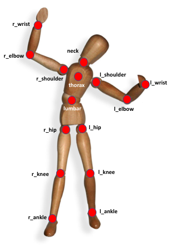
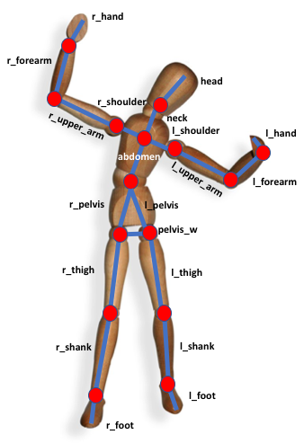
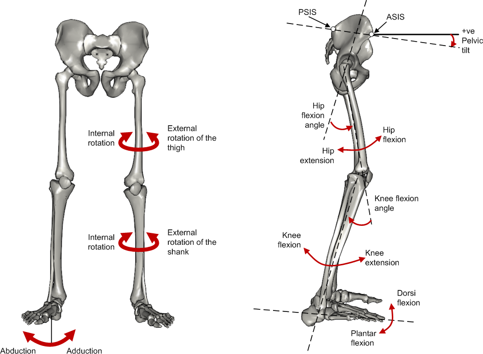

Human model Here are defined the anthropomorphic models considered in Eurobench protocols. Concepts and label described here are then used and referenced in the data format used to collect experimental measures. 1. Joint centers  Figure 1. Labels of Joints centers 2. Human body segment Each body segment is a single body with multiple dimensions, inertial and mass properties. Each body segment is delimited by one or more joints. Depending on the availability and need for properties different models could be constructed by merging adjacent segments or approximating them to null-mass bodies[1]. Each segment has a key label assigned, for bilateral bodies use the prefix "_r" or "_l" to differentiate between right and left bodies. E.g. "r_hand" Table 1. List of body segments and joints considered in our kinematic model proposed. Group Segments Delimiting Joints key label Upper limb Hand wrist axis / 2nd knuckle middle finger hand Forearm elbow axis / ulnar styloid forearm Upper Arm glenhumeral axis / elbow axis upper_arm Shoulder C7-T1 / glenhumeral axis shoulder Lower limb Foot lateral malleolus / head 2nd metatarsal foot Shank femoral condyles / medial malleolus shank Thigh greater trochanter / femoral condyles thigh Pelvis L4-L5 / greater trochanters pelvis greater trochanters pelvis_w[2] Head C7-T1 & first rip / ear canal head Trunk[3] Trunk C7-T1 / T12-L1 & diaphragm trunk Torso (trunk + shoulders) C7-T1 / T12-L1 & diaphragm torso glenhumeral axes torso_w[4] Abdomen T12-L1 / L4-L5 abdomen Back (trunk+ shoulders + abdomen) C7-T1 / L4-L5 back glenhumeral axes back_w[5]  Figure 2. Segments Labels 3. Angles definition All the angle definitions here presented are based on the Plug-in Gait model from Vicon. Joint angles are represented by the YXZ Cardan angles derived by comparing the relative orientations of the proximal (parent) and distal (child) segments around each joint (see Figure 4).  Figure 3. Representation of the lower limb angle convention. Figure taken from Vicon Documents: Plugin Gait kinematic variables 3.1. Hip Hip ab/adduction (Relative) (Label: hip_adduction) Hip adduction is measured in the plane of the hip flexion axis and the knee joint center. The angle is calculated between the long axis of the thigh and the frontal axis of the pelvis projected into this plane. A positive number corresponds to an adducted (inwardly moved) leg. Hip flexion/extension (Relative) (Label: hip_flexion) Hip flexion is calculated about an axis parallel to the pelvic transverse axis which passes through the hip joint center. The sagittal thigh axis is projected onto the plane perpendicular to the hip flexion axis. Hip flexion is then the angle between the projected sagittal thigh axis and the sagittal pelvic axis. A positive (Flexion) angle value corresponds to the situation in which the knee is in front of the body. Hip rotation (Relative) (Label: hip_rotation) Hip rotation is measured about the long axis of the thigh segment and is calculated between the sagittal axis of the thigh and the sagittal axis of the pelvis projected into the plane perpendicular to the long axis of the thigh. The sign is such that a positive hip rotation corresponds to an internally rotated thigh. 3.2. Knee Knee angles are derived from the femur and the untorsioned tibia segments. Knee ab/adduction (Knee valgus/varus) (Relative) (Label: knee_adduction) This is measured in the plane of the knee flexion axis and the ankle center, and is the angle between the long axis of the shank and the long axis of the thigh projected into this plane. A positive number corresponds to varus (outward bend of the knee). Knee flexion/extension (Relative) (Label: knee_flexion) The sagittal shank axis is projected into the plane perpendicular to the knee flexion axis. Knee flexion is the angle in that plane between this projection and the sagittal thigh axis. The sign is such that a positive angle corresponds to a flexed knee. Knee rotation (Relative) (Label: knee_rotation) Knee rotation is measured about the long axis of the shank. It is measured as the angle between the sagittal axis of the shank and the sagittal axis of the thigh, projected into a plane perpendicular to the long axis of the shank. The sign is such that a positive angle corresponds to internal rotation. If a tibial torsion value is present in the Session form, it is subtracted from the calculated knee rotation value. A positive tibial torsion value therefore has the effect of providing a constant external offset to knee rotation. 3.3. Ankle Ankle angles are derived from the torsioned tibia and the foot segment. Ankle dorsi/plantar flexion (Relative) (Label: ankle_flexion) The foot vector is projected into the foot sagittal plane. The angle between the foot vector and the sagittal axis of the shank is the foot dorsi/plantar flexion. A positive number corresponds to dorsiflexion. 3.4. Foot In the case of the feet, because they are defined in a different orientation to the tibia segments, an offset of 90 degrees is added to the flexion angle. This does not affect the Cardan angle calculation of the other angles because the flexion angle is the first in the rotation sequence. Foot progression (Absolute) (Label: foot_progression) This is the angle between the foot vector (projected into the laboratory’s transverse plane) and the sagittal laboratory axis. A positive number corresponds to an internally rotated foot. Foot rotation (Relative) (Label: foot_rotation) This is measured about an axis perpendicular to the foot vector and the ankle flexion axis. It is the angle between the foot vector and the sagittal axis of the shank, projected into the foot transverse plane. A positive number corresponds to an internal rotation. 3.5. Shoulder Shoulder ab/adduction (Relative) (Label: shoulder_adduction) The angle is calculated between the transverse axis of the humerus and the transverse axis of the thorax around a floating sagittal axis. A negative number corresponds to an abducted (outwardly moved) arm. Shoulder flexion/extension (Relative) (Label: shoulder_flexion) Shoulder flexion is calculated about an axis parallel to the thorax transverse axis. Shoulder flexion is the angle between the projected sagittal-humerus axis and the sagittal-thorax axis around the fixed transverse axis of the thorax. A positive (flexion) angle value corresponds to the situation in which the arm is in front of the body. Shoulder rotation (Relative) (Label: shoulder_rotation) Shoulder rotation is measured about the long axis of the humerus segment and is calculated between the sagittal axis of the humerus and the sagittal axis of the thorax around a floating frontal axis. The sign is such that a positive shoulder rotation corresponds to an internally rotated humerus. 3.6. Elbow Elbow flexion/extension (Relative) (Label: elbow_flexion) Elbow flexion is calculated between the sagittal radius axis and the sagittal humerus axis around the fixed transverse axis of the humerus. A positive number indicates a flexion angle. 3.7. Wrist Wrist ab/adduction (Relative) (Label: wrist_adduction) The angle is calculated between the transverse axis of the hand and the transverse axis of the radius around a floating sagittal axis. A positive number corresponds to the hand abducting toward the thumb. Wrist flexion/extension (Relative) (Label: wrist_flexion) Wrist flexion is the angle between the sagittal hand axis and the sagittal radius axis around the fixed transverse axis of the radius. A positive (flexion) angle value corresponds to the situation in which the wrist bends toward the palm. Wrist rotation (Relative) (Label: wrist_rotation) Wrist rotation is measured about the long axis of the hand segment and is calculated between the sagittal axis of the hand and the sagittal axis of the radius around a floating frontal axis. The sign is such that a positive wrist rotation corresponds to the hand rotating in the direction of the thumb. 3.8. Waist Pelvic obliquity (Absolute) (Label: pelvis_obliquity) Pelvic obliquity is measured about an axis of rotation perpendicular to the axes of the other two rotations. This axis does not necessarily correspond with any of the laboratory or pelvic axes. Pelvic obliquity is measured in the plane of the laboratory transverse axis and the pelvic frontal axis. The angle is measured between the projection into the plane of the transverse pelvic axis and projection into the plane of the laboratory transverse axis (the horizontal axis perpendicular to the subject’s axis of progression). A negative pelvic obliquity value (down) relates to the situation in which the opposite side of the pelvis is lower. Pelvic rotation (Absolute) (Label: pelvis_rotation) Pelvic rotation is calculated about the frontal axis of the pelvic coordinate system. It is the angle measured between the sagittal axis of the pelvis and the sagittal laboratory axis (axis closest to subject’s direction of progression) projected into the pelvis transverse plane. A negative (external) pelvic rotation value means the opposite side is in front. Pelvic tilt (Absolute) (Label: pelvis_tilt) Pelvic tilt is normally calculated about the laboratory’s transverse axis. If the subject’s direction of forward progression is closer to the laboratory’s sagittal axis, however, then pelvic tilt is measured about this axis. The sagittal pelvic axis, which lies in the pelvis transverse plane, is normally projected into the laboratory sagittal plane. Pelvic tilt is measured as the angle in this plane between the projected sagittal pelvic axis and the sagittal laboratory axis. A positive value (up) corresponds to the normal situation in which the PSIS is higher than the ASIS. 3.9. Spine Spine flexion/extension (Relative) (Label: spine_flexion) Spine flexion is the angle between the sagittal thorax axis and the sagittal pelvis axis around the fixed transverse axis of the pelvis. A positive (flexion) angle value corresponds to the situation in which the thorax is tilted forward. Spine lateral flexion (Relative) (Label: spine_lateralFlexion) The angle between the long axis of the thorax and the long axis of the pelvis, around a floating transverse axis. Spine rotation (Relative) (Label: spine_rotation) It is measured as the angle between the sagittal axis of the thorax and the sagittal axis of the pelvis, around a floating frontal axis. As the thorax frontal axis points downward while the pelvis frontal axis points upward, a positive angle therefore refers to rotation of the thorax toward the opposite side. Thorax obliquity (Absolute) (Label: thorax_obliquity) Thorax obliquity is measured about an axis of rotation perpendicular to the axes of the other two rotations. This axis does not necessarily correspond with any of the laboratory or thorax axes. Thorax obliquity is measured in the plane of the laboratory transverse axis and the Thorax frontal axis. The angle is measured between the projection into the plane of the transverse thorax axis and projection into the plane of the laboratory transverse axis (the horizontal axis perpendicular to the subject’s axis of progression. As the thorax segment is defined with the frontal Z axis point downward a positive (up) thorax obliquity angle relates to the situation in which the opposite side of the thorax is lower. Thorax rotation (Absolute) (Label: thorax_rotation) Thorax rotation is calculated about the frontal axis of the thorax coordinate system. It is the angle measured between the sagittal axis of the thorax and the sagittal laboratory axis (axis closest to subject’s direction of progression) projected into the thorax transverse plane. As the thorax segment is defined with the frontal Z axis point downward a positive (internal) thorax rotation value means the opposite side is in front. Thorax tilt (Absolute) (Label: thorax_tilt) Thorax tilt is normally calculated about the laboratory’s transverse axis. If the subject’s direction of forward progression is closer to the laboratory’s sagittal axis, however, then thorax tilt is measured about this axis. The sagittal thorax axis is normally projected into the laboratory sagittal plane. Thorax tilt is measured as the angle in this plane between the projected sagittal thorax axis and the sagittal laboratory axis. A positive value (up) corresponds to forward thorax tilt. 3.10. Neck Head obliquity (Absolute) (Label: head_obliquity) Head lateral tilt is measured about an axis of rotation perpendicular to the axes of the other two rotations. This axis does not necessarily correspond with any of the laboratory or head axes. Head lateral tilt is measured in the plane of the laboratory transverse axis and the head frontal axis. The angle is measured between the projection into the plane of the transverse head axis and projection into the plane of the laboratory transverse axis (the horizontal axis perpendicular to the subject’s axis of progression). A negative head obliquity value (down) relates to the situation in which the opposite side of the head is lower. Head rotation (Absolute) (Label: head_rotation) Head rotation is calculated about the frontal axis of the head coordinate system. It is the angle measured between the sagittal axis of the head and the sagittal laboratory axis (axis closest to subject’s direction of progression) projected into the head transverse plane. A negative (external) head rotation value means the opposite side is in front. Head tilt (Absolute) (Label: head_tilt) Head tilt is normally calculated about the laboratory’s transverse axis. If the subject’s direction of forward progression is closer to the laboratory’s sagittal axis, however, then head tilt is measured about this axis. The sagittal head axis is normally projected into the laboratory sagittal plane. Head tilt is measured as the angle in this plane between the projected sagittal head axis and the sagittal laboratory axis. A positive value (up) corresponds to forward head tilt. Neck flexion/extension (Relative) (Label: neck_flexion) The sagittal head axis is projected onto the plane perpendicular to the thorax sagittal axis. Neck flexion is then the angle between the projected sagittal head axis and the sagittal thorax axis around the fixed transverse axis of the thorax. A positive (flexion) angle value corresponds to the situation in which the head is tilted forward. Neck lateral flexion (Relative) (Label: neck_lateral_flexion) The angle between the long axis of the head and the long axis of the thorax around a floating transverse axis. Neck rotation (Relative) (Label: neck_rotation) Neck rotation is measured about the long axis of the head. It is measured as the angle between the sagittal axis of the head and the sagittal axis of the thorax, around a floating frontal axis. As the thorax frontal axis points downward while the head frontal axis points upward, a positive angle therefore refers to rotation of the head toward the opposite side. 1. e.g. the "shoulder" segment is useful to compute degrees of freedom, but its mass property is difficult to assess and not generally available, so it could be used with a null mass or merged with the trunk 2. the pelvis is a single rigid body with more than one dimension. If referring to the body segment use only the "pelvis" label, if referring to its dimensions use "r_pelvis","l_pelvis" and "pelvis_w" 3. depending on availability and need of mass and inertia information the trunk can be used alone, include the shoulders or include shoulders and abdomen. 4. the trunk is a single rigid body with more than one dimensions. If referring to the body segment use only the "trunk" label 5. the back is a single rigid body with more than one dimensions. If referring to the body segment use only the "back_full" label